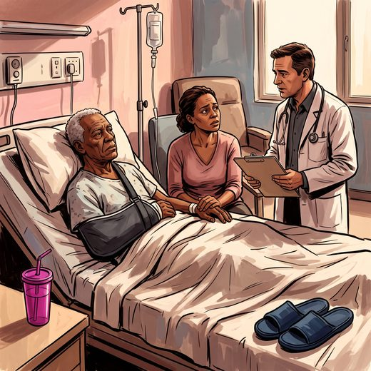

Consulta rápida à beira do leito
Condutas, doses e interações.
Referências da aula · 6
- Mitchell SL, Teno JM, Kiely DK, et al. The clinical course of advanced dementia. N Engl J Med. 2009;361(16):1529-38. PMID 19828530. doi:10.1056/NEJMoa0902234.PubMedDOI
- American Geriatrics Society Ethics Committee and Clinical Practice and Models of Care Committee. American Geriatrics Society feeding tubes in advanced dementia position statement. J Am Geriatr Soc. 2014;62(8):1590-3. PMID 25039796. doi:10.1111/jgs.12924.PubMedDOI
- Volkert D, Beck AM, Faxén-Irving G, Frühwald T, Hooper L, Keller H, et al. ESPEN guideline on nutrition and hydration in dementia — Update 2024. Clin Nutr. 2024;43(6):1599-1626. doi:10.1016/j.clnu.2024.04.039. PMID 38772068.PubMedDOI
- Montero-Odasso M, van der Velde N, Martin FC, et al. World guidelines for falls prevention and management for older adults: a global initiative. Age Ageing. 2022;51(9):afac205. PMID 36178003. doi:10.1093/ageing/afac205.PubMedDOI
- Nicolle LE, Gupta K, Bradley SF, et al. Clinical practice guideline for the management of asymptomatic bacteriuria: 2019 update by the Infectious Diseases Society of America. Clin Infect Dis. 2019;68(10):e83-110. PMID 30895288. doi:10.1093/cid/ciy1121.PubMedDOI
- Livingston G, Huntley J, Liu KY, et al. Dementia prevention, intervention, and care: 2024 report of the Lancet standing Commission. Lancet. 2024;404(10452):572-628. PMID 39096926. doi:10.1016/S0140-6736(24)01296-0.PubMedDOI